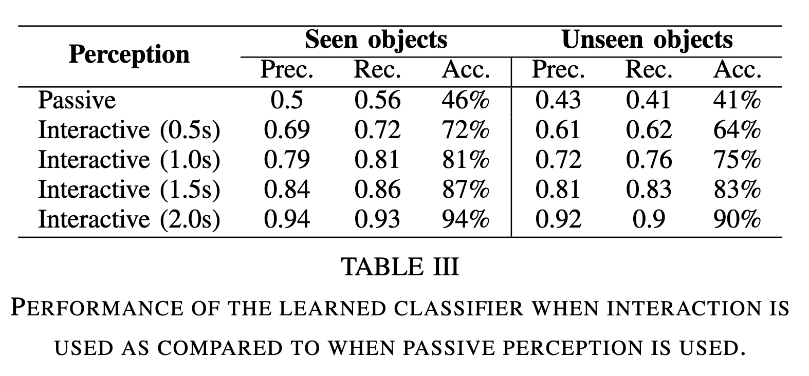

Classifying Grasps with Interactive Probes


Modern warehouses process millions of unique objects which are often stored in densely packed containers. To automate tasks in this environment, a robot must be able to pick diverse objects from highly cluttered scenes. Real world learning is a promising approach, but executing picks in the real world is time-consuming, can induce costly failures, and often requires extensive human intervention, which causes operational burden and limits the scope of data collection and deployments.
In this work, we leverage interactive probes to visually evaluate grasps in clutter without fully executing picks, a capability we refer to as Interactive Visual Failure Prediction (IVFP). This enables autonomous verification of grasps during execution to avoid costly downstream failures as well as autonomous reward assignment, providing supervision to continuously shape and improve grasping behavior as the robot gathers experience in the real world, without constantly requiring human intervention. Through experiments on a Stretch RE1 robot, we study the effect that IVFP has on performance - both in terms of effective data throughput and success rate, and show that this approach leads to grasping policies that outperform policies trained with human supervision alone, while requiring significantly less human intervention.
Architectures of the neural networks used to model the grasp policy and grasp classifier. The policy takes as input the current RGB image and target object mask. The output includes a 3D grasp position and pre-grasp gripper width. The input to the classifier is a video of the interactive perception policy testing a grasp. The output is a grasp class prediction.